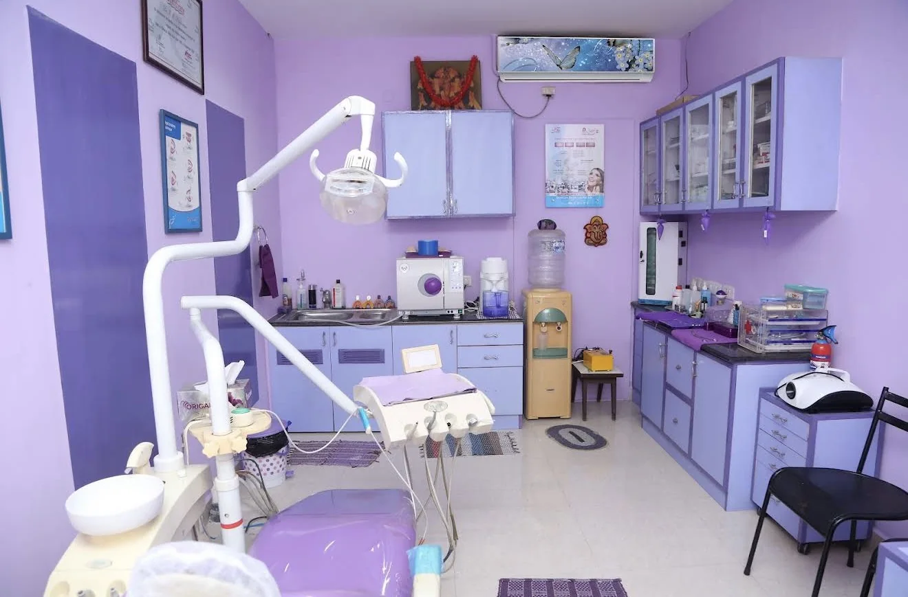
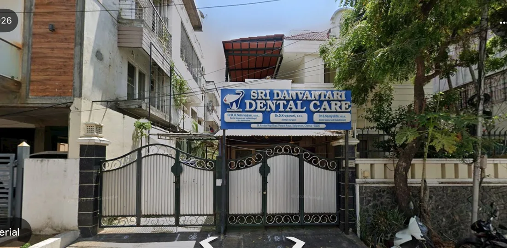
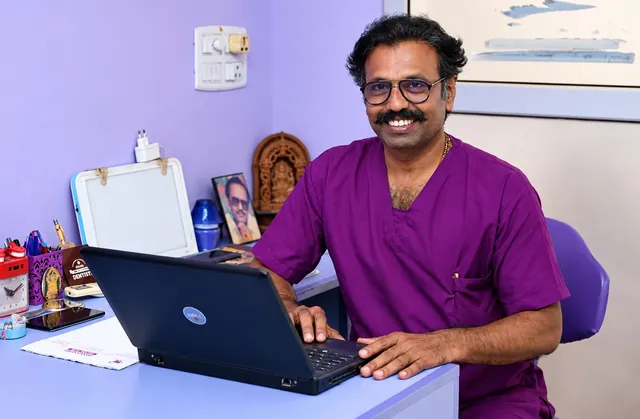

Listen first
Every visit starts with your concerns, your history and what you would like to achieve.
Sri Danvantari Dental Care offers dental care for you and your family on Navalar Main Road, near Shankar Narayanan Temple.

Simple principles that guide every consultation.
Every visit starts with your concerns, your history and what you would like to achieve.
You hear what we find and what your options are, in plain language, before any treatment begins.
Treatment plans, visits and costs are discussed openly so you can choose with confidence.
A typical first appointment, step by step.
Book through the website or WhatsApp. The clinic contacts you to confirm a time.
Share your concerns and medical history, then the dentist examines your teeth and gums.
The dentist explains what they found and the treatment choices available.
Treatment goes ahead once you agree, with follow-up visits where needed.
A few simple steps help the dentist understand your needs at the first visit.
Urgent symptoms? Severe facial swelling, difficulty breathing or swallowing, bleeding that will not stop or a facial injury need urgent medical care. Go to the nearest hospital emergency department or call 108 / 112.
A look at the real treatment room and clinical environment at Sri Danvantari Dental Care.



Facilities and equipment at the clinic, as confirmed by the clinic.
The clinic's facilities and equipment will be listed here after the clinic confirms them.
Read each doctor's profile before your visit.

Common treatments listed for the clinic. Please confirm availability.
No. 24, Navalar Main Road, Devaraj Nagar, near Shankar Narayanan Temple, Saligramam, Chennai, Tamil Nadu 600093.
Send your preferred date and time through WhatsApp. The clinic will contact you to confirm your appointment.
Sri Danvantari Dental Care
Share your details and preferred visit time. Your request opens in WhatsApp, and the clinic will contact you to confirm.
Sri Danvantari Dental Care
Automated help desk with set answers. It is not a live AI or a dentist and cannot diagnose or book appointments.